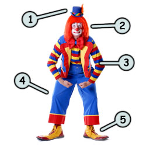
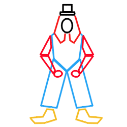
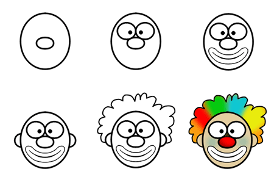
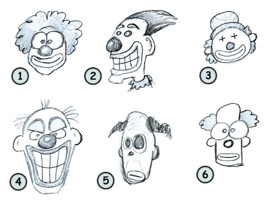

How to draw cartoon clowns
Drawing cartoon clowns: some fun facts before starting sketching!
- Since most clowns usually don't speak, they can amuse people from any language. That's why they are popular in most carnival.
- The origin of the clown is rather mysterious. Greeks use them in their theater.
 Do clowns make you laugh? Are you afraid of clowns? In my case, I think they can be both! Funny and scary!
The one on your left certainly fall into the first category! Look for a funny hat (1), strange make-up and hair (2) and some colorful (or awful, you judge!) clothing (3)(4)! For some reason, clowns are born with disproportionate feet (5). I guess that's why they are clumsy!
 When we first look at the shapes of this clown, we can see how the legs are large and how the feet are big! I really feel like the costume is too big for the guy!
On the other hand, the hat seems (and is) really too small for the head of this funny/creepy character.
But since a clown will usually look intentionally for disproportion, all of this works pretty well!
This lesson will focus only on the head of a simple clown. First sketch two circles, one for the head and one for the nose. Then, you can add the eyes and the mouth. Finish your creation by drawing the ears and the hair.
We can see the importance of colors in this example. A black and white clown is not quite the same as a colorful clown!

Once again, you can play with your imagination and choose to draw a funny clown (1)(3), an angry clown (4) or try to go for a more weird, strange looking character (5).
Don't forget that clowns are unique in a way that some might find them funny but a lot of us think that they are spooky, scary or even evil! Now you know how to draw a clown!

Are you looking for cartoon images? Do you like the images available on this website?
Click here to learn how you could make them yours!
Go back from How to draw cartoon clowns to home page
| Share this page: |  |  | ||
 |  |